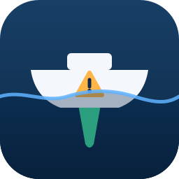

Keel · opciones de ícono (150 px, 32 px y 16 px)
Actual · solo estabilidad
A · Tirita sobre la grieta
B · Quilla escudo
C · Insignia de verificado
D · Candado en el casco
E · Quilla en forma de check

F · Alerta en el casco